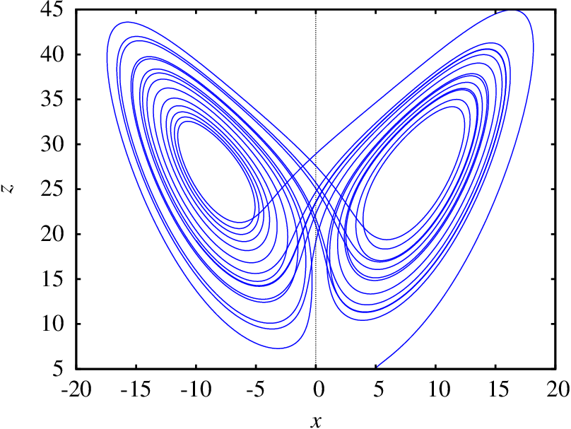

⠀Efeito⠀⠀⠀⠀⠀⠀ Borboleta
O que é Efeito Borboleta:
O Efeito Borboleta é uma expressão utilizada na Teoria do Caos para fazer referência a uma das características mais marcantes dos sistemas caóticos: a sensibilidade nas condições iniciais.
Este fenômeno foi detectado e descrito pela primeira vez pelo meteorologista estadunidense Edward Lorenz quando trabalhava em um sistema de equações diferenciais com o objetivo de modelar a evolução do tempo (clima).
O fenômeno da sensibilidade em relação a pequenas perturbações nas condições iniciais foi descrito através de uma alegoria, apelidada de Efeito Borboleta, segundo a qual o bater de asas de uma borboleta no Brasil pode desencadear uma sequência
de fenômenos meteorológicos que provocarão um tornado no Texas.
A expressão teve ainda a feliz coincidência de o "atrator" estudado por Lorenz no seu sistema de equações ter uma forma geométrica semelhante a uma borboleta.
